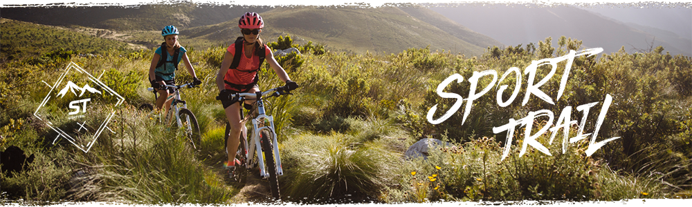

Introduction

Rockrider ST 520 mountain bike:
This mountain bike is suitable for men and women and comes in a few sizes (and with an adjustable stem)
for different heights. It's a really fun and comfortable pick with 24 speeds, double-walled 27.5" wheels,
disc brakes and a hammock saddle.
Sport trail:
Trail riding is all about getting enjoyment out of the full benefits of mountain biking
in others' company: touring, surpassing yourself, exploring new pastures, challenging your friends,
always seeking out the thrill of riding. Decathlon's French brand Rockrider designs these products based on
what you want. Welcome to your Mountain Bike platform.
Cycling comfort:
Enjoy the raised position, adjustable stem, 80mm suspension and hollow saddle.
Directional control:
Control your path with the double disc brakes and notched tyres.
Efficiency:
Efficient cycling thanks to the 27.5" wheels, 24 speeds and aluminum frame.
Ease of use:
Use the wheel to adjust the fork to your weight. Easily adjust the saddle.
Lifetime warranty:
Rockrider provides a lifetime guarantee for the frame, stem and handlebars.
Specifications
What our team has to say:
This ST 520 mountain bike has been entirely designed and developed at the B'Twin Village in France (Lillle).
We've designed, developed and tested the ST 520 MTB for comfort and efficiency.
This combines to give MTBers confidence to overcome any new obstacle.
We have involved real MTBers at every stage of this bike's design process.
And we hope that the Rockrider ST 520 is everything you could hope for to give you excellent MTB rides.
A unisex mountain bike:
This Rockrider ST 520 mountain bike is unisex.
How to choose your st 520 mountain bike size:
choose the right size depending on your tall
- S: between 1.50m and 1.64m
- M: between 1.65m and 1.74m
- L: between 1.75m and 1.84m
- XL: between 1.85 m and 2.00 m
If you are on the limit between 2 sizes:
Choose the smaller size for easier steering (easier to handle) and comfort (straighter back).
Choose the larger size for easier pedalling with a more stretched-out position (position more suited to
performance).
A comfortable, playful frame:
For a lighter weight and more efficient pedalling, the Rockrider ST 520 frame has been designed with 6061
aluminium
(only 1.9 kg in size M). Our designers have designed and developed it so it is comfortable and easy to
manoeuvre.
Its slope has been designed to keep your back straighter. The lower bottom bracket helps keep you more stable
during turns.
Front suspension to cushion unpredictable terrain:
Directly adjust the stiffness of the suspension to your weight, from 55kg to 105kg, to more easily travel over
roots and stones.
This is all thanks to the UFIT concept (exclusive to Decathlon).
Easy: simply turn the adjustment wheel to fit your weight!
The 80 mm front suspension is designed for slightly uneven trails and helps you overcome your obstacles with
no worries.
It is based on a mechanical spring and is reliable. And it's easy to look after.
Rear suspension: none:
This mountain bike has no rear suspension. This is a "semi-rigid" mountain bike.
Compared to a full suspension mountain bike (with rear suspension), the advantages are clear: lighter weight,
you will spend less energy on flat ground. However, if you want more comfort, the ST 520 MTB also exists in a
"full suspension" version with a rear shock absorber.
Derailleur & drive train: how to change speeds:
3 8-speed chainwheels, or a wide range of 24 speeds.
2 quick shifters on the handlebar.
Left (chainwheels): control ascents/descents.
Right (speeds): more precise control over your pedalling. In detail:
- Triple chainwheels - 22, 32 and 42 teeth.
- SHIMANO Altus or MICROSHIFT FD-M22 front derailleur.
- SRAM X3 rear derailleur.
- SRAM X4 shifters, with speed indicators.
- SRAM PG820 8 cog cassette, 11 to 32 teeth.
Saddle / seat post: comfortable and sporty seat:
Our teams conceived and designed an exclusive saddle for this bike. Suitable for different hip sizes,
its "hammock" shape is particularly good for sport touring. The Flex 27.2mm diameter aluminium seatpost
also contributes to its increased level of comfort.
Quick and easy tool-free adjustment of your saddle height using the adjustment lever on the seat post
clamp.
Handlebar, stem, grips: take control of the handlebars:
With its adjustable stem, the ST 520 controls are close at hand. The all-aluminium B'Twin stem is 70 mm (size
S), 80 mm (size M/L), or 90 mm (size XL) and can be raised using 5 adjustment intervals: + 0mm, + 7.5mm, +
15mm, + 22.5mm, + 30mm.
In detail:
- 680mm oversized aluminium handlebars
- Soft touch B'Twin sport grips for good grip and a comfortable feel.
Mechanical disc brakes: get a grip on your braking:
The HAYES M-X5 mechanical double disc brakes give you gradual, powerful braking at the front and back.
Whilst the aluminium Tektro brake levers are light, precise, and easy to hold. Just two fingers are all you
need to brake.
Try to get your brakes adjusted at least once a year.
27.5" double-walled wheels & tyres for dry ground:
Take on obstacles! The aluminium wheels are effective and sturdy: 27.5" double-walled rims.
Their diameter is the perfect balance between comfort and performance. With their 28 spokes,
they are lightweight, stiff, and durable.The exclusive 27.5" x 2.0 B'TWIN ALL TERRAIN DRY tyres are designed
for dry terrain.
Their side lugs provide good traction during turns.
The recommended tyre pressure according to the weight of the rider is marked on the tyre sidewall.
Platform pedals:
The ST 520 is supplied with platform MTB pedals mounted on bearings, made from resin for light weight and
safety.
If your foot slides on the pedal, there's less risk of injury.
Easily transport and store your mountain bike:
Not all rides start on your doorstep. Need to remove the front wheel?
It's easy thanks to the integrated clamping lever.
And the rear wheel? There is a nut at the back to secure the bike and limit the risk of theft.
A flat spanner is needed to remove the rear wheel.
A bike carrier will make your life easier if you want to avoid dirtying your car
Accessories:
Your ST 520 mountain bike is supplied with a bell, lights, wheel reflectors and pedals.
The frame is compatible with:
- Front and rear mudguards
- Stand
- Bottle cageg
- Saddle bag
- Rear pannier rack
- Child seat (add an additional pannier rack for sizes S and M to avoid touching the rear wheel).
Our advice for your first few rides:
- When mountain biking, there is always the risk of a fall: don't forget to wear a helmet.
- Even if the saddle is comfortable, cycling shorts with a pad (saddle-shaped foam) are a real plus for
preventing glute pain.
- If you don't want to stop to drink, bring water in a bottle or water bladder to access it while riding.
- Punctures are always possible, remember to bring a repair kit.
Weight:
- Size S: 14.35 kg
- Size M: 14.45 kg
- Size L: 14.55 kg
- Size XL: 14.7 kg